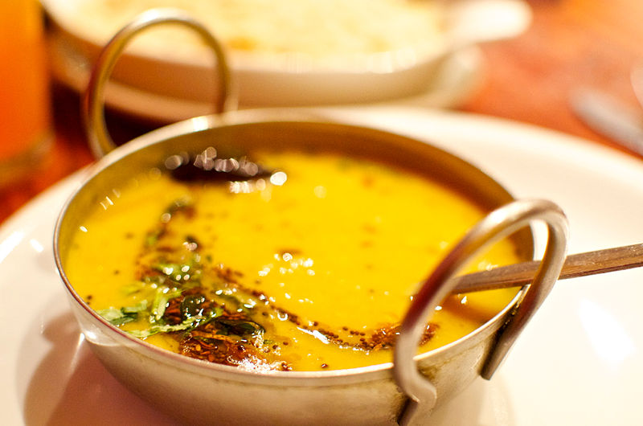

Daal Palak (Lentils and Spinach)
Submitted by Sarah Ijaz
Ingredients
- Red Lentils: 2 cups
- Chopped Spinach: 1 cup
- Red chili powder: 1 tsp
- Turmeric: 1 tsp
- Salt: 1 tsp
- Ginger garlic paste: 2 tsp
- Chopped tomato: 1 medium
Tadka (Tempering)
- Cumin seeds 1 tbsp
- Oil 1/4th cup
- Onion 1
- Chopped green chillies: 2
- Chopped, fresh coriander leaves
Instructions
- Wash lentils
- Add lentils and spinach into a pot with enough water to cover them and cook on low flame.
- Add red chili powder, turmeric, salt, ginger garlic paste, tomatoes and mix well. Cook for 15 minutes on medium flame.
- While the lentils are coooking: In a pan, heat oil, add onion and cumin seeds, and fry until golden brown.
- Turn the flame off from the lentils, and while they are still hot, pur the hot oil and fried onions over the top.
- Finally, garnish with green chillies and coriander.